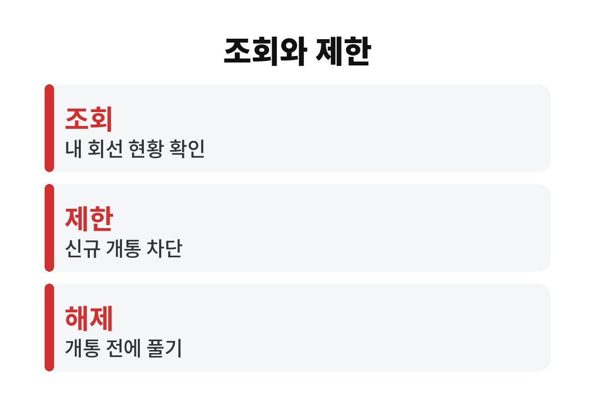
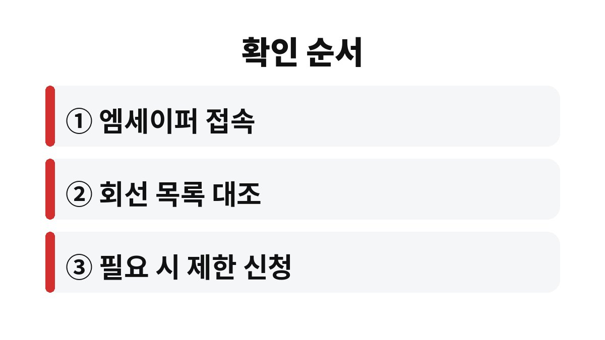

휴대폰 명의도용 조회는 엠세이퍼에서 가입사실을 확인하는 것으로 시작하고, 가입제한은 그 뒤에 따로 거는 서비스다.
두 기능을 같은 것으로 알고 있으면 조회만 하고 끝내 버리는 경우가 생긴다.
한국인터넷진흥원이 운영하는 엠세이퍼와 통신사 안내를 기준으로 두 기능의 차이와 확인 순서를 적었다.
가입사실현황조회는 내 명의로 어느 통신사에 어떤 회선이 가입돼 있는지 보여 주는 기능이다.
보는 것으로 끝나고, 새 개통을 막아 주지는 않는다.
조회 결과는 조회한 시점의 상태다.
몇 달 뒤 누군가 내 정보로 개통을 시도한다면 그때는 다시 봐야 알 수 있다.
주민등록번호나 신분증이 유출된 적이 있다면 정기적으로 확인하는 습관이 필요하다.
명의도용은 내가 쓰지 않는 통신사나 알뜰폰에서 일어날 수 있다.
엠세이퍼는 여러 통신사의 가입 정보를 한곳에서 확인하는 방식이라 이 점에서 쓸모가 있다.
예를 들어 오래전 쓰다 해지한 알뜰폰 번호가 아직 살아 있거나, 가족 명의로 만든 줄 알았던 회선이 내 이름으로 남아 있는 경우도 조회에서 드러난다.
도용이 아니라 내가 잊고 있던 회선일 때도 요금이 계속 나갈 수 있어서, 조회는 요금 점검 효과도 있다.
| 구분 | 하는 일 | 언제 쓰나 |
|---|---|---|
| 가입사실현황조회 | 내 명의 회선 현황 확인 | 의심될 때, 정기 점검 |
| 가입제한 | 내 명의 신규 개통 차단 | 본인이 개통할 일이 없을 때 |
| 제한 해제 | 차단을 풀고 개통 허용 | 새 폰이나 번호이동 직전 |

가입제한을 걸어 두면 본인이 직접 개통하려 할 때도 막힌다.
그래서 통신사를 바꾸거나 알뜰폰으로 옮길 계획이 있다면 제한을 먼저 풀어야 한다.
풀지 않고 매장에 가면 개통이 안 되어 한 번 더 방문하게 된다.
가입제한은 신규 개통만 막는 서비스다.
이미 쓰고 있는 회선의 통화나 문자 이용에는 영향을 주지 않는다.
해제는 같은 서비스에서 본인 인증 후 직접 할 수 있도록 되어 있어, 걸어 두었다가 필요할 때 풀면 된다.
조회 자체는 몇 분 안에 끝나는 작업이다.
오래 걸리는 부분은 본인 인증 수단을 찾는 일이다.
인증서 유효기간이 지났다면 재발급부터 해야 해서 미리 확인해 두는 편이 낫다.

메뉴 위치와 이름은 사이트와 앱 개편에 따라 달라질 수 있다.
화면이 다르면 검색창에 엠세이퍼를 입력해 공식 안내를 먼저 확인한다.
내가 만든 적 없는 회선이 목록에 있다면 먼저 가족이나 지인이 대신 개통해 준 적이 없는지 떠올려 본다.
그래도 짐작 가는 곳이 없으면 해당 통신사에 개통 경위 확인을 요청하고, 경찰 신고나 명의도용 신고 절차는 법제처 생활법령정보에 정리된 순서를 따른다.
혼자 해결하려고 시간을 끌수록 요금이 쌓일 수 있어 빠르게 연락하는 쪽이 낫다.
명의도용이 의심되는데 요금 청구서가 아직 없다면 통신사에 미납과 청구 내역을 함께 문의한다.
문의 내용과 통화 시각을 메모해 두면 이후 신고 절차에서 설명하기 쉽다.
오늘 할 일은 엠세이퍼에서 내 명의 회선 목록을 한 번 보는 것이다.
목록에 모르는 번호가 없다면 가입제한을 걸지 말지는 당분간 새 개통 계획이 있는지로 정하면 된다.
가족 중 부모님 명의 점검도 같은 방식으로 할 수 있다.
본인 인증이 필요하므로 부모님이 직접 하시게 돕거나, 통신사 매장에서 안내받는 쪽이 안전하다.
스미싱 링크를 눌렀던 적이 있다면 조회를 한 번 해 보는 것이 마음 편하다.
참고 자료: 법제처 찾기쉬운생활법령정보 「휴대전화 명의도용 예방과 신고」(2026년 11월 확인) · 엠세이퍼 「가입사실현황조회 및 가입제한서비스 이용 방법 안내」(2026년 11월 확인)
※ 2026년 기준 공식 안내를 바탕으로 정리한 글이며, 기기·앱 버전에 따라 메뉴 이름이 다를 수 있다.